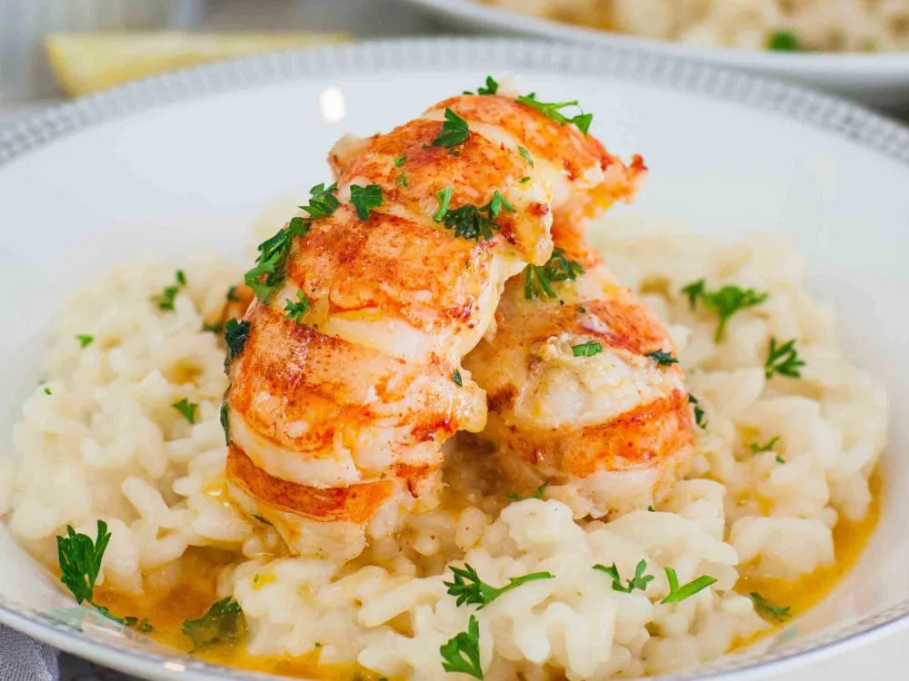

Lobster Risotto Recipe - Gordon Ramsay

Ingredients
- 4 cups chicken broth
- 3 (5 oz.) American Main lobster tails
- 3 tbsp butter, divided
- 1 cup uncooked Arborio rice
- 3/4 cup frozen green peas, thawed
- 1/2 cup grated parmesan
- Salt and pepper to taste
Preparation Method
- Bring broth and 1 1/2 cups of water to a boil in a saucepan.
- Add Lobster; cover and cook for 4 minutes.
- Remove the Lobster from the pan; cool for 5 minutes.
- Remove meat from cooked lobster tails, reserving shells and chop meat.
- Place shells in a large zip-top plastic bag and heat 1 tbsp butter in a medium saucepan over medium-high heat. . Coarsely crush shells using a meat mallet or heavy skillet. Return crushed shells to the broth mixture.
- Reduce heat to medium-low.
- Heat 1 tbsp butter in a medium saucepan over medium-high heat. Cover and cook for 20 minutes; strain and discard solids. Return broth mixture to saucepan; keep warm over low heat.
- Add rice to pan; cook for 2 minutes, stirring constantly.
- Stir in 1 cup broth mixture and cook for 5 minutes or until liquid is absorbed, stirring constantly. Reserve 2 tbsps Broth mixture.
- Add the remaining broth mixture, 1/2 cup simultaneously, constantly stirring until each portion is absorbed before adding the next (about 22 minutes total).
- Remove from heat, stir in Lobster, the reserved 2 tbsps Broth mixture, 2 tbsps Butter and green peas. Serve immediately with remaining Parmesan.